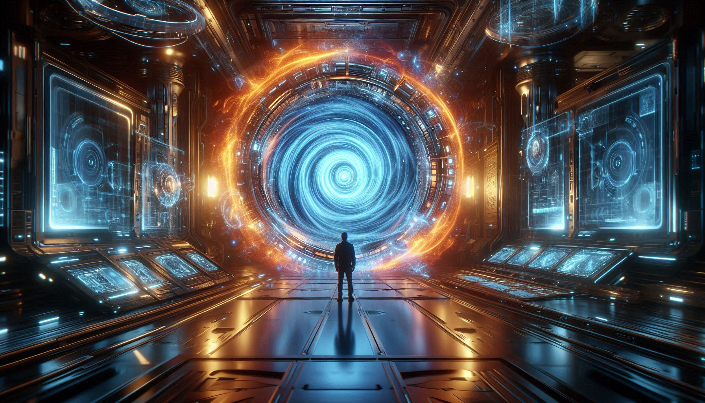

BEYOND THE HORIZON OF NOW

Time travel verum science fiction alla. Albert Einstein-te Theory of Relativity prakaram time flexible aanu. Nammal ethra speed-il move cheyyunno, atra slow aayi time nammukk pass cheyyu.
Future-ilekkum Past-ilekkum pokaan scientists chila theoretical shortcuts parayunnu:
| METHOD | HOW IT WORKS | TARGET |
|---|---|---|
| Wormholes | Space-time-il ulla oru shortcut "tunnel". | Past & Future |
| Black Holes | Extreme gravity time-ine "stretch" cheyyunnu. | Future Only |
| Tipler Cylinder | Spinning mass upayogichu time-ine loop cheyyikka. | Past |
Past travel-ile ettavum valiya thadaassam Paradoxes aanu.
• Grandfather Paradox: Ningal past-il poyi ningalude grandfather-ne meet cheyyunnathinu munpe 'accident' aakkiyal? Appol ningal janikkilla. Ningal janichillengil pinne engane past-il poyi ithu cheyyan kazhiyum? 🤯
• Bootstrap Paradox: Ningal future-il ninnu oru Time Machine-te design konduvannu past-il ullavarkku koduthu. Ippo aa design aaranu sathyathil kandupidichath? Future aano atho Past aano? It has no origin!
2009-il famous scientist **Stephen Hawking** oru party nadathi. Pakshe invitation ayachath party kazhinja sesham aanu! Ayal karuthiyath real time travelers undenkil avar mathrame aa party-il ethu ennanu.
Chila scientists parayunnu Past-il change varuthiyaal reality collapse aavilla enn. Pakaram, nammal oru New Timeline (Parallel Universe) create cheyyukayaanu. Appol nammude origin timeline-il oru mattavum undavilla. Avengers Endgame-il ithaanu kaanikkunnath!
Time nammal karuthunnath pole oru 'straight line' alla. Athoru ocean pole aanu. Nammal ippo athinte surface-il mathramaanu. Oru divasam nammude technology Einstein-te equations-ine sathyamaakum... pakshe aa divasam nammal ee lokath undaakumo? 😌